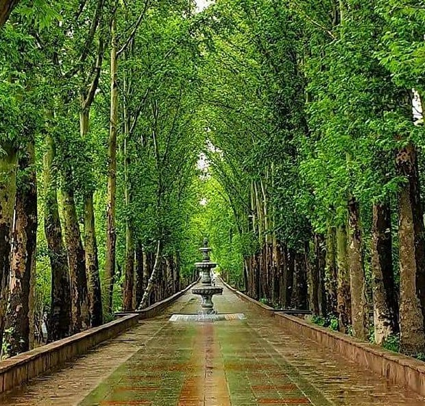

✤ باغها، یکی از بهترین مکانها برای گذراندن ساعات و لحظاتی پر از آرامش و سکوت هستند. سرسبزی و طراوت باغ به آدمی روح و جان تازهای میبخشد و دوست دارید در سایهی درختان بلند آن بشینید و در حینی که از هوای مطبوع و دلپذیرش لذت ببرید، کتابی را که دوست دارید بخوانید یا به شیرینترین خاطرهی زندگی فکر کنید. از همین مکانها جایی در شهر کرج و در یکی از خوش آب و هواترین محله های این شهر به نام قرار دارد و به باغ فاتح معروف است.
✣ نام و نشان باغ فاتح را باید در استان البرز و در شهر کرج جستوجو کنید. جایی که در گذشته یکی از سرسبزترین و بهترین مناطق کرج به شمار میرفت. این منطقه جهانشهر نام دارد که بهدلیل داشتن باغهای فراوان به «باغشهر» معروف بود و در حالحاضر، بسیاری از باغهای آن دیگر وجود ندارند. جهانشهر از شمال به حاجیآباد، از غرب به کوی کارمندان شمالی، از جنوب محدود به محلهی چهارصددستگاه و از شرق نیز به بلوار طالقانی شمالی محدود میشود. یکی از بازماندههای باغهای جهانشهر، باغ فاتح است که در بلوار جمهوری کرج قرار دارد. این باغ که اکنون به پارک و فضای سبز تبدیل شده است زیر نظر سازمان شهرداری اداره میشود.شروع داستان باغ فاتح با زندگی محمد صادق فاتح یزدی گره خورده است. فاتح از سرمایهداران و ثروتمندان یزد بود که دست تقدیر او را از آنجا به کرج کشاند. قبل از انقلاب، خشکسالی، قحطی و بیکاری در یزد باعث شد که فاتح، مانند بسیاری از همشهریهایش مهاجرت کند و به کرج بیاید. وی در کرج به سرمایهگذاری پرداخت و کارخانههای معروف و بزرگی مانند روغن جهان، جهان چیت، یخسازی جهان، پلاستیک سازی آرمه، شرکت آبادانی جهان، جهان چیت، پتوبافی جهان، چای جهان، صابون جهان و روغنموتور جهان را تاسیس کرد؛ اما همه اقدامات وی به اینجا ختم نمیشود. ساخت محلههایی مثل جهانشهر و باغهای تماشایی آن، کوی کارمندان شمالی، کوی کارمندان جنوبی، چهارصد دستگاه، ساخت مدارس و آموزشگاهها، بیمارستان و دهها فعالیت عمرانی و عام المنفعه دیگر، از خدمات و کارهای وی در جهت آبادانی و رونق شهر کرج بود. اما چرا محمد صادق فاتح بسیاری از مکانهایی را که ساخت جهان نامید؟ علت این نامگذاریها به عشق وی به همسرش، رقیه خانم غضنفر، بر میگردد که او را جهان صدا میکرد. زمانی که فاتح در حال تحصیل در رشتهی مهندسی کشاورزی در هند بود، جهان خانم در اثر بیماری آبله نابینا میشود؛ اما این از علاقه و مهر فاتح چیزی کم نمیکند و با وی ازدواج میکند. بنابراین محمد صادق بر هرآنچه که میساخت نام همسرش را میگذاشت.
✢ پارک تنیس کرج: مجموعه بینالمللی تنیس جهانشهر یا پارک تنیس کرج در باغ فاتح قرار دارد این پارک هشت زمین تمرین و یک زمین مسابقه دارد با ظرفیت ۱۲۰۰ نفر، تنها مجموعهی تنیس در ایران است که دارای زمینهای کفپوششده است. مساحت این مجموعه ۱۶ هزار متر مربع است و از بخشهای دیگر آن ساختمان اداری، فروشگاه ورزشی، رستوران، جایگاه ویژه مقامات و اتاق داوران، کمیته برگزاری مسابقات، استراحتگاه موقت ورزشکاران، جایگاه ویژه خبرنگاران ، محوطه فضای سبز و پیست سلامت است. امکانات ورزشی: باغ فاتح مکانی مناسب برای ورزش و پیادهروی است در این باغ وسایل ورزشی وجود دارد و میتوانید به ورزشهای مثل والیبال و بسکتبال نیز بپردازید. امکانات رفاهی: فضای سبز، بوفه خرید خوراکی، کافیشاپ، رستوران از دیگر امکانات باغ فاتح است. کلبه کتاب: در این باغ کلبه کتاب وجود دارد که میتوانید ضمن تفریح در باغ، از خواندن کتاب نیز لذت ببرید. پارک ایران کوچک: با بازدید از این پارک میتوانید به کل ایران سفر و از سیاهچادر ایل بختیاری، خانه آغاج اوی ترکمنها، مُضیف خوزستان، کپر آذربایجان، بخشی از بافت روستای ابیانه و آبانبار یزد دیدن کنید.
قدمت و تاریخچه باغ فاتح کرج